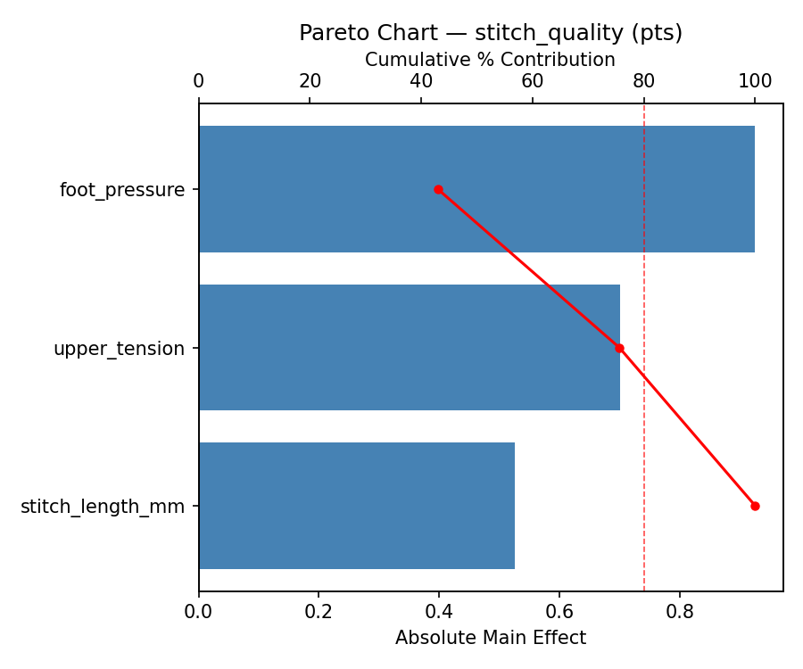
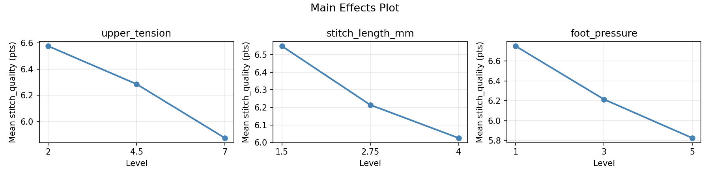
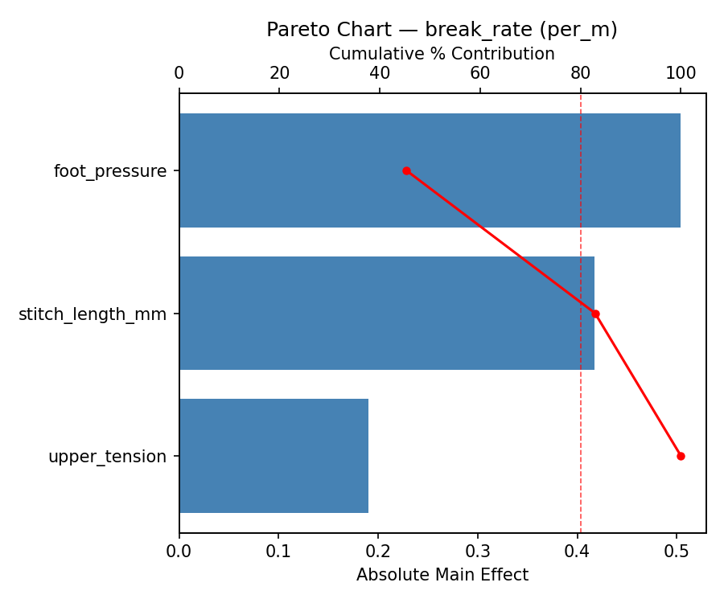
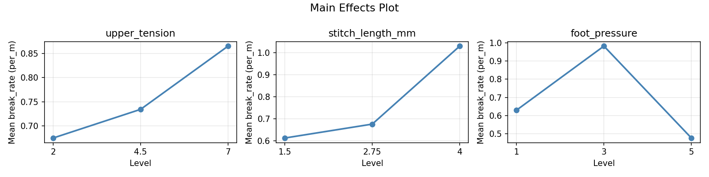
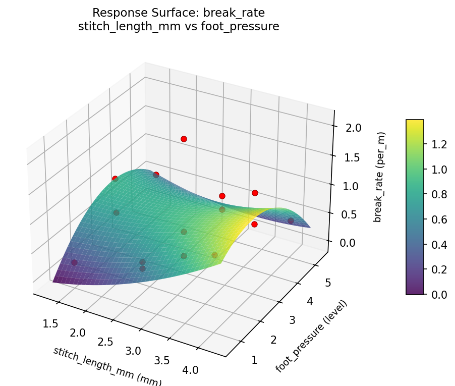
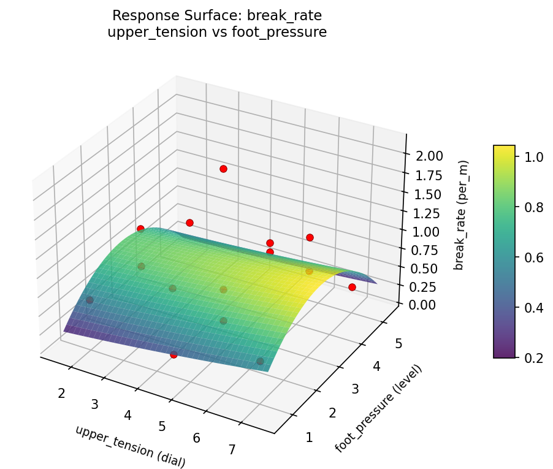
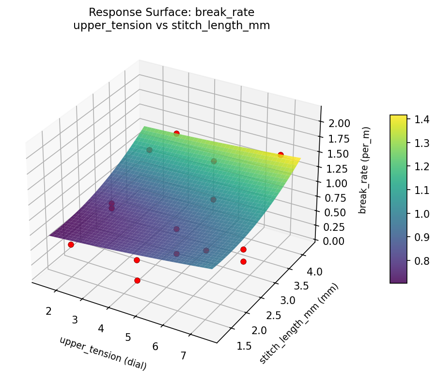
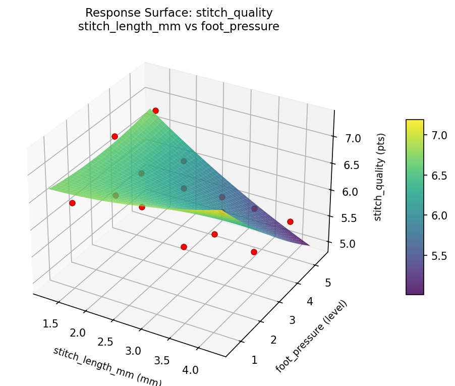
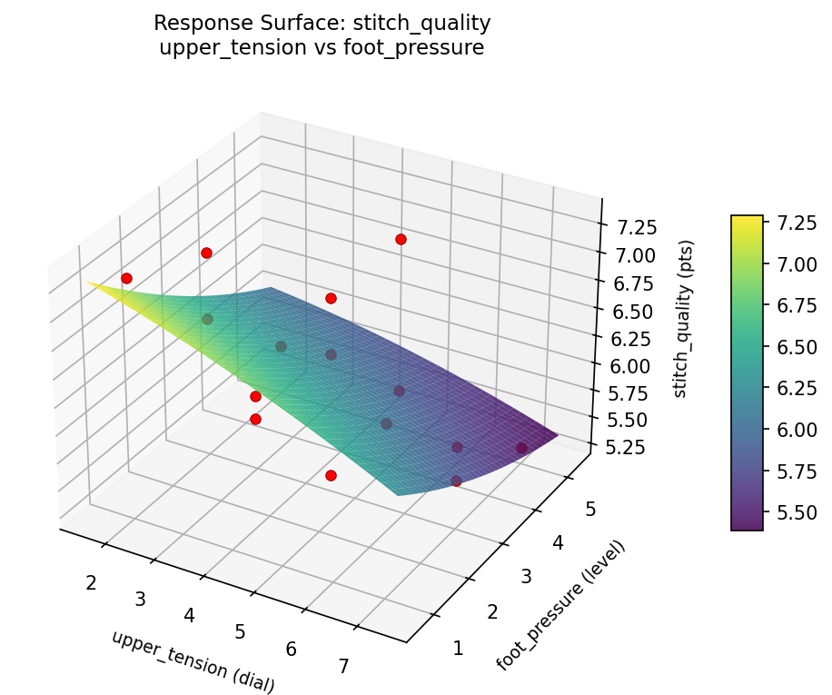
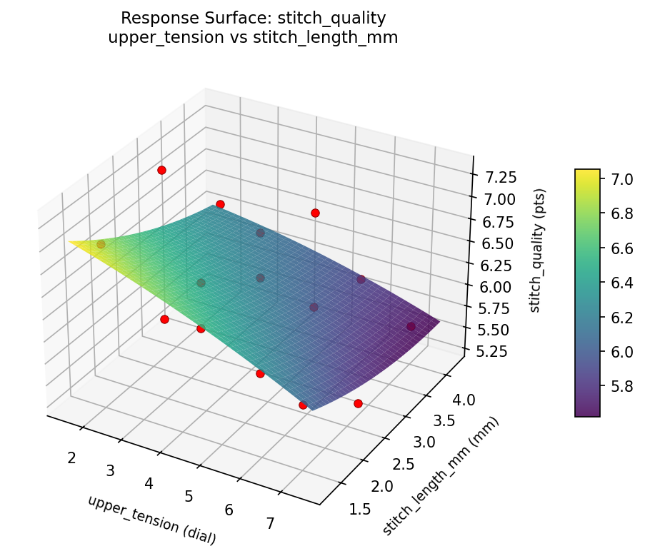

Summary
This experiment investigates sewing machine stitch quality. Box-Behnken design to maximize stitch quality and minimize thread breakage by tuning upper tension, stitch length, and presser foot pressure.
The design varies 3 factors: upper tension (dial), ranging from 2 to 7, stitch length mm (mm), ranging from 1.5 to 4.0, and foot pressure (level), ranging from 1 to 5. The goal is to optimize 2 responses: stitch quality (pts) (maximize) and break rate (per_m) (minimize). Fixed conditions held constant across all runs include machine = mechanical, fabric = cotton_twill.
A Box-Behnken design was chosen because it efficiently fits quadratic models with 3 continuous factors while avoiding extreme corner combinations — requiring only 15 runs instead of the 8 needed for a full factorial at two levels.
Quadratic response surface models were fitted to capture potential curvature and factor interactions. The RSM contour plots below visualize how pairs of factors jointly affect each response.
Key Findings
For stitch quality, the most influential factors were foot pressure (43.0%), upper tension (32.6%), stitch length mm (24.4%). The best observed value was 7.3 (at upper tension = 4.5, stitch length mm = 2.75, foot pressure = 3).
For break rate, the most influential factors were foot pressure (45.3%), stitch length mm (37.6%), upper tension (17.1%). The best observed value was 0.1 (at upper tension = 7, stitch length mm = 2.75, foot pressure = 5).
Recommended Next Steps
- Run confirmation experiments at the predicted optimal settings to validate the model.
- Consider whether any fixed factors should be varied in a future study.
Experimental Setup
Factors
| Factor | Low | High | Unit |
|---|
upper_tension | 2 | 7 | dial |
stitch_length_mm | 1.5 | 4.0 | mm |
foot_pressure | 1 | 5 | level |
Fixed: machine = mechanical, fabric = cotton_twill
Responses
| Response | Direction | Unit |
|---|
stitch_quality | ↑ maximize | pts |
break_rate | ↓ minimize | per_m |
Configuration
{
"metadata": {
"name": "Sewing Machine Stitch Quality",
"description": "Box-Behnken design to maximize stitch quality and minimize thread breakage by tuning upper tension, stitch length, and presser foot pressure"
},
"factors": [
{
"name": "upper_tension",
"levels": [
"2",
"7"
],
"type": "continuous",
"unit": "dial"
},
{
"name": "stitch_length_mm",
"levels": [
"1.5",
"4.0"
],
"type": "continuous",
"unit": "mm"
},
{
"name": "foot_pressure",
"levels": [
"1",
"5"
],
"type": "continuous",
"unit": "level"
}
],
"fixed_factors": {
"machine": "mechanical",
"fabric": "cotton_twill"
},
"responses": [
{
"name": "stitch_quality",
"optimize": "maximize",
"unit": "pts"
},
{
"name": "break_rate",
"optimize": "minimize",
"unit": "per_m"
}
],
"settings": {
"operation": "box_behnken",
"test_script": "use_cases/179_sewing_stitch_quality/sim.sh"
}
}
Experimental Matrix
The Box-Behnken Design produces 15 runs. Each row is one experiment with specific factor settings.
| Run | upper_tension | stitch_length_mm | foot_pressure |
|---|
| 1 | 4.5 | 1.5 | 1 |
| 2 | 4.5 | 2.75 | 3 |
| 3 | 7 | 2.75 | 5 |
| 4 | 7 | 2.75 | 1 |
| 5 | 4.5 | 2.75 | 3 |
| 6 | 4.5 | 2.75 | 3 |
| 7 | 2 | 2.75 | 5 |
| 8 | 7 | 1.5 | 3 |
| 9 | 4.5 | 1.5 | 5 |
| 10 | 7 | 4 | 3 |
| 11 | 2 | 2.75 | 1 |
| 12 | 4.5 | 4 | 5 |
| 13 | 2 | 1.5 | 3 |
| 14 | 2 | 4 | 3 |
| 15 | 4.5 | 4 | 1 |
Step-by-Step Workflow
1
Preview the design
$ python doe.py info --config use_cases/179_sewing_stitch_quality/config.json
2
Generate the runner script
$ python doe.py generate --config use_cases/179_sewing_stitch_quality/config.json \
--output use_cases/179_sewing_stitch_quality/results/run.sh --seed 42
3
Execute the experiments
$ bash use_cases/179_sewing_stitch_quality/results/run.sh
4
Analyze results
$ python doe.py analyze --config use_cases/179_sewing_stitch_quality/config.json
5
Get optimization recommendations
$ python doe.py optimize --config use_cases/179_sewing_stitch_quality/config.json
ℹ
Multi-Objective Optimization
This experiment has conflicting objectives (stitch_quality (↑), break_rate (↓)). Use --multi to find the best compromise using desirability functions:
$ python doe.py optimize --config use_cases/179_sewing_stitch_quality/config.json --multi
6
Generate the HTML report
$ python doe.py report --config use_cases/179_sewing_stitch_quality/config.json \
--output use_cases/179_sewing_stitch_quality/results/report.html
Real-World Experiment Workflow
ℹ
Physical Textile Process? Use the Manual Workflow
Textile experiments involve real fabrics, dyes, tension, and physical processes that require hands-on work and measurement. The simulation script above is for demonstration. For your real experiments, use record, status, and export-worksheet.
$ python doe.py export-worksheet --config use_cases/179_sewing_stitch_quality/config.json \
--format csv --output worksheet.csv
$ python doe.py status --config use_cases/179_sewing_stitch_quality/config.json
$ python doe.py record --config use_cases/179_sewing_stitch_quality/config.json --run 1
$ python doe.py analyze --config use_cases/179_sewing_stitch_quality/config.json --partial
$ python doe.py analyze --config use_cases/179_sewing_stitch_quality/config.json
$ python doe.py optimize --config use_cases/179_sewing_stitch_quality/config.json
$ python doe.py report --config use_cases/179_sewing_stitch_quality/config.json \
--output report.html
✔
Works Without a Test Script
The analysis pipeline doesn't care how results were produced. Record your measurements with record, and the full analysis, optimization, and reporting pipeline works identically. Use --partial to get early insights before all runs are complete.
Features Exercised
| Feature | Value |
|---|
| Design type | box_behnken |
| Factor types | continuous (all 3) |
| Arg style | double-dash |
| Responses | 2 (stitch_quality ↑, break_rate ↓) |
| Total runs | 15 |
Analysis Results
Generated from actual experiment runs using the DOE Helper Tool.
Response: stitch_quality
Top factors: foot_pressure (43.0%), upper_tension (32.6%), stitch_length_mm (24.4%).
Pareto Chart

Main Effects Plot

Response: break_rate
Top factors: foot_pressure (45.3%), stitch_length_mm (37.6%), upper_tension (17.1%).
Pareto Chart

Main Effects Plot

Response Surface Plots
3D surfaces fitted with quadratic RSM. Red dots are observed data points.
break rate stitch length mm vs foot pressure

break rate upper tension vs foot pressure

break rate upper tension vs stitch length mm

stitch quality stitch length mm vs foot pressure

stitch quality upper tension vs foot pressure

stitch quality upper tension vs stitch length mm

Full Analysis Output
RSM surface: rsm_stitch_quality_upper_tension_vs_stitch_length_mm.png
RSM surface: rsm_stitch_quality_upper_tension_vs_foot_pressure.png
RSM surface: rsm_stitch_quality_stitch_length_mm_vs_foot_pressure.png
RSM surface: rsm_break_rate_upper_tension_vs_stitch_length_mm.png
RSM surface: rsm_break_rate_upper_tension_vs_foot_pressure.png
RSM surface: rsm_break_rate_stitch_length_mm_vs_foot_pressure.png
=== Main Effects: stitch_quality ===
Factor Effect Std Error % Contribution
--------------------------------------------------------------
foot_pressure 0.9250 0.1723 43.0%
upper_tension 0.7000 0.1723 32.6%
stitch_length_mm 0.5250 0.1723 24.4%
=== Summary Statistics: stitch_quality ===
upper_tension:
Level N Mean Std Min Max
------------------------------------------------------------
2 4 6.5750 0.7500 5.6000 7.3000
4.5 7 6.2857 0.6414 5.3000 6.9000
7 4 5.8750 0.6021 5.3000 6.7000
stitch_length_mm:
Level N Mean Std Min Max
------------------------------------------------------------
1.5 4 6.5500 0.5066 5.9000 7.0000
2.75 7 6.2143 0.8133 5.3000 7.3000
4 4 6.0250 0.5560 5.5000 6.6000
foot_pressure:
Level N Mean Std Min Max
------------------------------------------------------------
1 4 6.7500 0.3873 6.4000 7.3000
3 7 6.2143 0.6414 5.3000 7.0000
5 4 5.8250 0.7274 5.3000 6.9000
=== Main Effects: break_rate ===
Factor Effect Std Error % Contribution
--------------------------------------------------------------
foot_pressure 0.5039 0.1372 45.3%
stitch_length_mm 0.4175 0.1372 37.6%
upper_tension 0.1900 0.1372 17.1%
=== Summary Statistics: break_rate ===
upper_tension:
Level N Mean Std Min Max
------------------------------------------------------------
2 4 0.6750 0.2288 0.5100 1.0100
4.5 7 0.7343 0.6822 0.1000 2.1000
7 4 0.8650 0.5551 0.3100 1.5300
stitch_length_mm:
Level N Mean Std Min Max
------------------------------------------------------------
1.5 4 0.6125 0.3559 0.2500 1.1000
2.75 7 0.6757 0.6532 0.1000 2.1000
4 4 1.0300 0.4410 0.4600 1.5300
foot_pressure:
Level N Mean Std Min Max
------------------------------------------------------------
1 4 0.6300 0.3636 0.2500 1.1200
3 7 0.9814 0.6806 0.1000 2.1000
5 4 0.4775 0.1242 0.3100 0.5900
Pareto chart (stitch_quality): use_cases/179_sewing_stitch_quality/results/analysis/pareto_stitch_quality.png
Pareto chart (break_rate): use_cases/179_sewing_stitch_quality/results/analysis/pareto_break_rate.png
Main effects (stitch_quality): use_cases/179_sewing_stitch_quality/results/analysis/main_effects_stitch_quality.png
Main effects (break_rate): use_cases/179_sewing_stitch_quality/results/analysis/main_effects_break_rate.png
Optimization Recommendations
=== Optimization: stitch_quality ===
Direction: maximize
Best observed run: #12
upper_tension = 4.5
stitch_length_mm = 2.75
foot_pressure = 3
Value: 7.3
RSM Model (linear, R² = 0.2938, Adj R² = 0.1012):
Coefficients:
intercept +6.2533
upper_tension +0.2000
stitch_length_mm -0.1375
foot_pressure +0.4125
RSM Model (quadratic, R² = 0.5039, Adj R² = -0.3890):
Coefficients:
intercept +6.0667
upper_tension +0.2000
stitch_length_mm -0.1375
foot_pressure +0.4125
upper_tension*stitch_length_mm +0.2250
upper_tension*foot_pressure -0.1250
stitch_length_mm*foot_pressure -0.2500
upper_tension^2 +0.0167
stitch_length_mm^2 +0.4417
foot_pressure^2 -0.1083
Curvature analysis:
stitch_length_mm coef=+0.4417 convex (has a minimum)
foot_pressure coef=-0.1083 concave (has a maximum)
upper_tension coef=+0.0167 negligible curvature
Predicted optimum (from linear model):
upper_tension = 7
stitch_length_mm = 2.75
foot_pressure = 5
Predicted value: 6.8658
Model quality: Weak fit — consider adding center points or using a different design.
Factor importance:
1. foot_pressure (effect: 0.8, contribution: 45.6%)
2. stitch_length_mm (effect: 0.6, contribution: 32.3%)
3. upper_tension (effect: 0.4, contribution: 22.1%)
=== Optimization: break_rate ===
Direction: minimize
Best observed run: #15
upper_tension = 7
stitch_length_mm = 2.75
foot_pressure = 5
Value: 0.1
RSM Model (linear, R² = 0.0890, Adj R² = -0.1595):
Coefficients:
intercept +0.7533
upper_tension +0.0837
stitch_length_mm +0.0738
foot_pressure -0.1775
RSM Model (quadratic, R² = 0.6921, Adj R² = 0.1378):
Coefficients:
intercept +0.8933
upper_tension +0.0838
stitch_length_mm +0.0737
foot_pressure -0.1775
upper_tension*stitch_length_mm +0.5400
upper_tension*foot_pressure -0.1425
stitch_length_mm*foot_pressure -0.0625
upper_tension^2 -0.1067
stitch_length_mm^2 +0.2833
foot_pressure^2 -0.4392
Curvature analysis:
foot_pressure coef=-0.4392 concave (has a maximum)
stitch_length_mm coef=+0.2833 convex (has a minimum)
upper_tension coef=-0.1067 concave (has a maximum)
Notable interactions:
upper_tension*stitch_length_mm coef=+0.5400 (synergistic)
Predicted optimum (from quadratic model):
upper_tension = 7
stitch_length_mm = 4
foot_pressure = 3
Predicted value: 1.7675
Model quality: Moderate fit — use predictions directionally, not precisely.
Factor importance:
1. foot_pressure (effect: 0.6, contribution: 52.2%)
2. stitch_length_mm (effect: 0.4, contribution: 32.9%)
3. upper_tension (effect: 0.2, contribution: 14.9%)